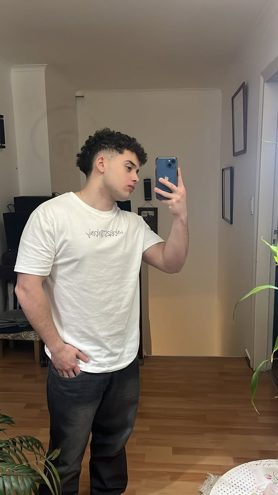

Biografia de Francisco

Hola, soy Francisco Prividera, tengo 20 años y soy de Buenos Aires, Argentina. Actualmente estoy viviendo en Denver, Colorado, una experiencia que me está ayudando a crecer un montón a nivel personal y profesional.
Tuve la oportunidad de trabajar en Estados Unidos con una visa J-1, lo cual no solo me permitió mejorar mi inglés, sino también desenvolverme en un ambiente laboral internacional. Antes de eso, trabajé en administración en una empresa de herramientas en Argentina, donde aprendí sobre gestión, organización y responsabilidad.
Hoy en día estoy estudiando la carrera de Licenciatura en Administración de Tecnología en UADE. Elegí esta carrera porque combina dos cosas que me gustan mucho: la tecnología y el mundo empresarial.